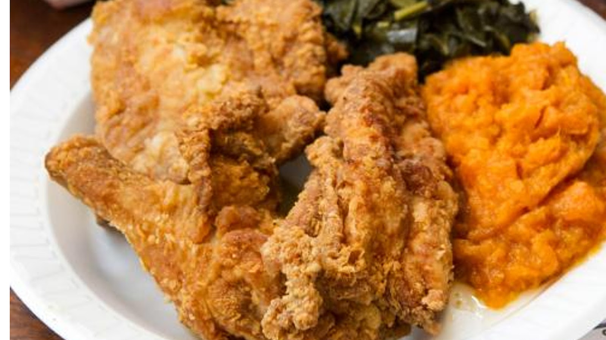
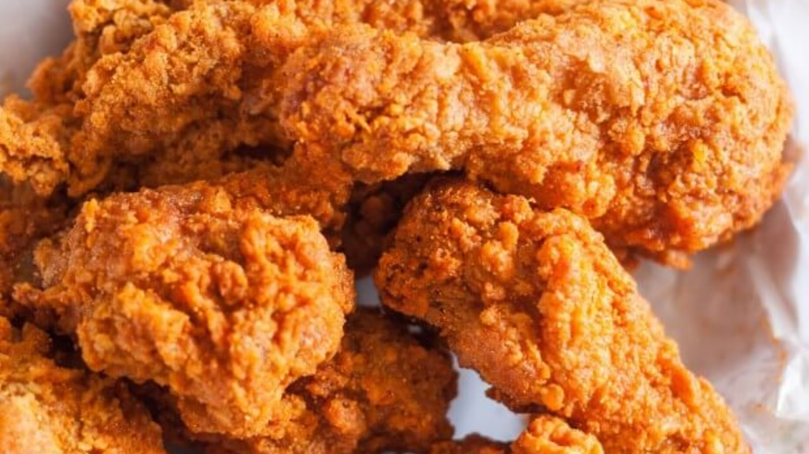
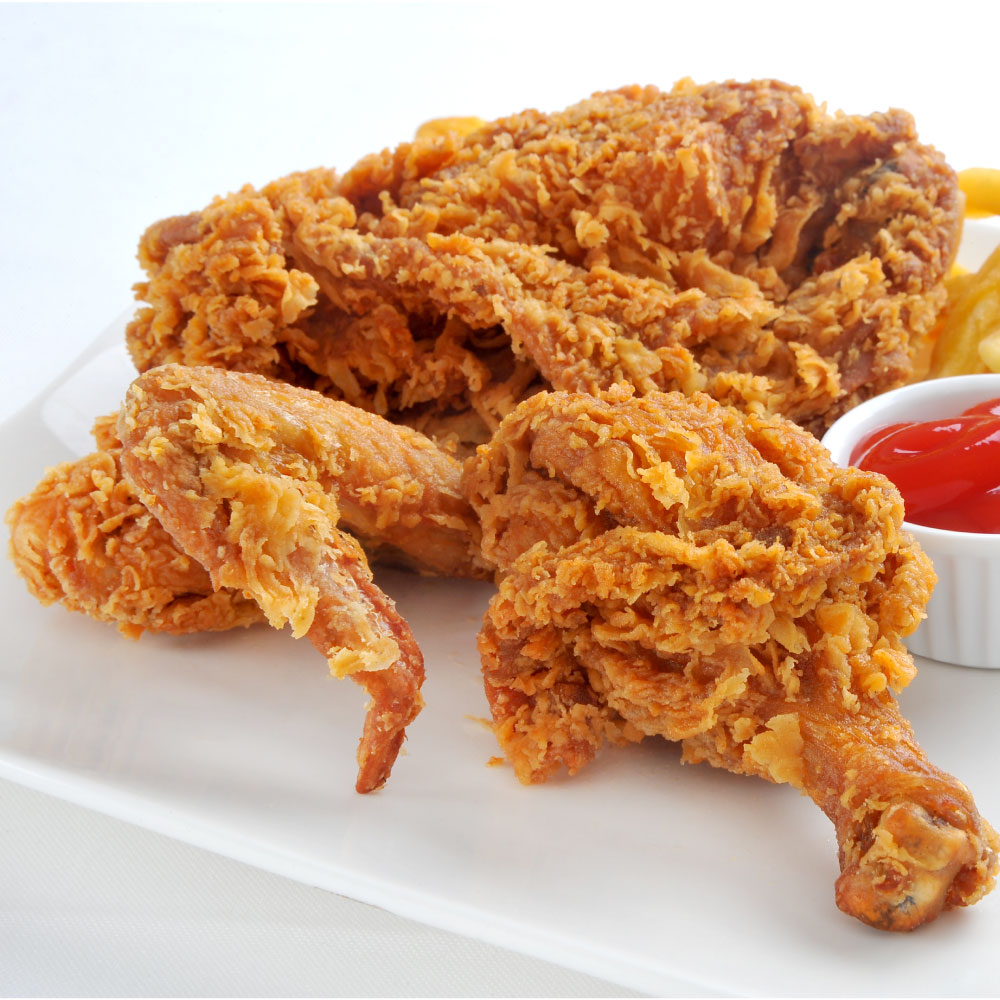
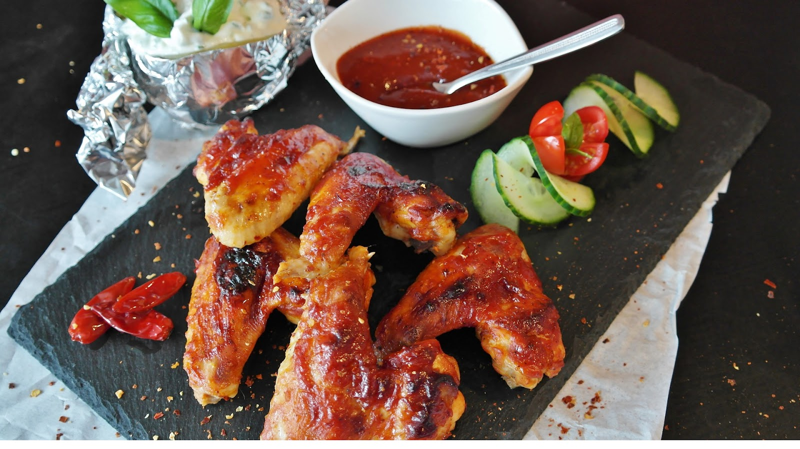
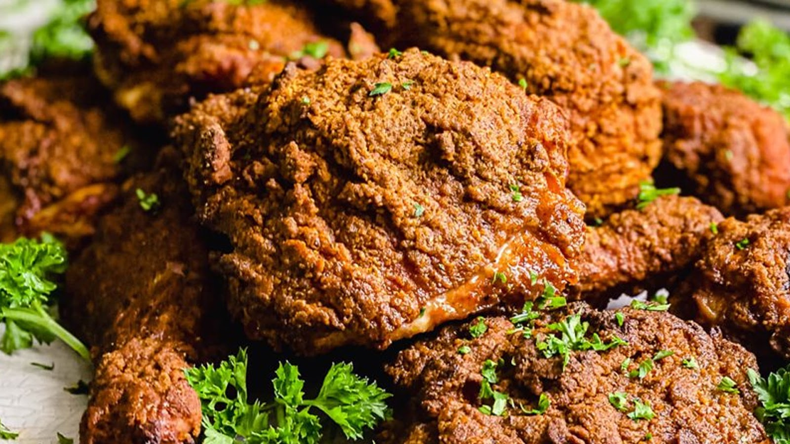
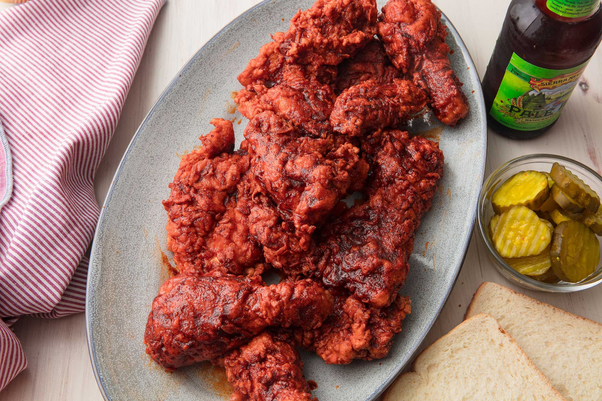
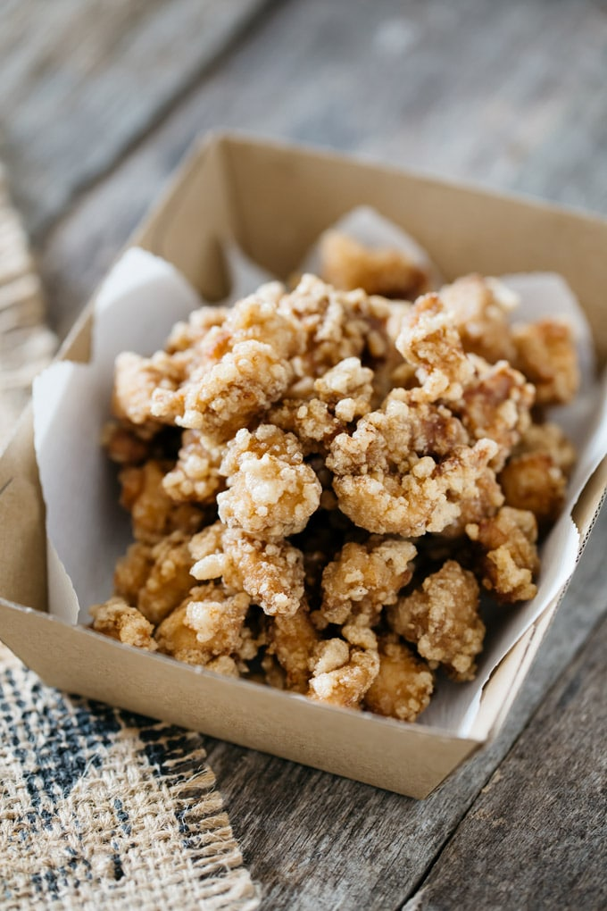

世界各国の様々なフライドチキン
アメリカ
カントリーフライドチキン(Country Fried Chicken)
カントリースタイルのチキンは、小麦粉にパン粉をつけて油で揚げ、シンプルな味付けをしたフライドチキンの一種である。中世ヨーロッパで始まったとされ、アフリカの部族の宴会でも見られる。中世ヨーロッパとアフリカのスタイルが合わさったと言われ、カントリーフライドチキンはパン粉を付けて揚げたものである。

バターミルクフライドチキン(Buttermilk Fried Chicken)
南部風フライドチキンとも言うバターミルクフライドチキンは、アメリカ南部の古典的なフライドチキンである。手羽先、胸肉、もも肉、脚肉をバターミルクに浸して作る。小麦粉にカイエン、ブラックペッパーなどのスパイスを混ぜたものを鶏肉に塗る。最終的には植物油で揚げるのだが、伝統的には鋳鉄製のスキレットを使い、油に強いチキンバケツに入れて提供される。バターミルクを使ったパン粉のおかげで、アメリカ南部のフライドチキンはサクサクとした食感に仕上がる。

ブローストフライドチキン(Broasted Fried Chicken)
ブローストは一般的なフライドチキンであるが、フライパンで焼くのではなく、圧力鍋の中で焼くタイプである。圧力鍋と揚げ物を組み合わせることで、肉の水分を損なうことなく、皮やパンのパリパリ感を出すことができる。圧力鍋と揚げ物を組み合わせることで、外はカリカリに、中はジューシーな鶏肉に仕上がる。

バッファローウィング(Buffalo Wings)
バッファローウィングは、一般的に鶏の手羽先部分を素揚げし、提供前にコーティングまたはソースに浸したものである。ソースは、酢をベースにしたカイエンペッパー・ホットソースと溶かしバターで作られています。これにより、バッファローウィングは独特のピリッとしたスパイシーな味になります。お好みに応じて、辛さをマイルド、ミディアム、またはホットで調整できる。バッファローウィングは、前菜として、または温かいご飯と一緒に楽しめるので、多目的な料理である。

スモークフライドチキン(Smoked Fried Chicken)
フライドチキンのサンドイッチには、スモークスタイルのフライドチキンが最適です。特に骨なしを使う場合はそうである。スモークフライドチキンは、骨なし鶏もも肉をバターミルク、ハラペーニョ、フレッシュハーブの混合物で塩漬けにすることによって作られる。この材料は、内部にわずかな熱を加えるだけでなく、中心部のしっとりとした柔らかさを実現する。燻製にしてから揚げるので、ハム、ベーコン、フライドチキンが一緒になったような仕上がりになる。スモーキーな風味とカリカリの食感を楽しめる。

ナッシュビル・ホットチキン(Nashville Hot Chicken)
その名の通り、アメリカ・テネシー州のナッシュビル名物のフライドチキン。ナッシュビルのホットチキンは、コーティングにホットソースとカイエンを使っているため、辛さはかなり強いだろう。それだけでなく、チキンの上にスパイシーなソースがかけられていることも期待できる。辛さとのバランスをとるため、サイドには白いパンとピクルスが添えられている。

ポップコーンチキン(Popcorn Chicken)
ポップコーンチキンは、基本的に日本の唐揚げをアメリカでアレンジしたものである。主な違いはパン粉の配合で、ポップコーンスタイルのフライドチキンは50/50または70/30の割合で配合されている。一口サイズのチキンにパン粉を付けて揚げたこの料理は、もともとKFCが考案したものだが、その後、世界中に広まった。また、中はマリネして柔らかく、外はパン粉を付けて風味豊かで楽しい歯ごたえに仕上げている。このように、チキンとパン粉の絶妙なプロポーションと柔らかさを体験できる。